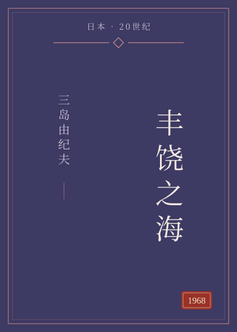
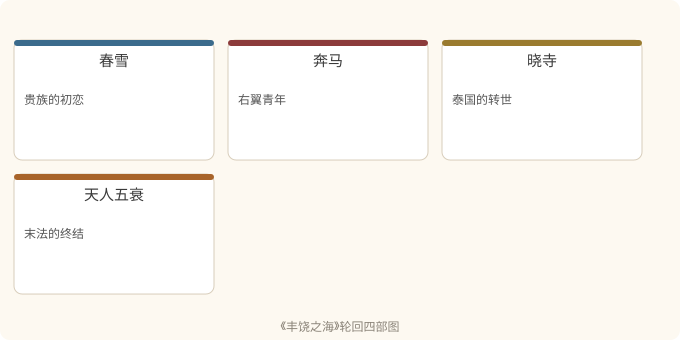

丰饶之海
一、基本信息
| 作者 | 三岛由纪夫 |
|---|---|
| 成书/出版 | 1965—1970年出版（作者页 B108 口径：丰饶之海四部曲（1965—70）） Yukio Mishima — Encyclopaedia Britannica（百科全书） |
| 国别/地区 | 日本 |
| 时代 | 现当代 · 20世纪 |
| 体裁 | 长篇小说（四部曲） |
| 语言 | 日语 |

《丰饶之海》轮回四部图（主题·结构图）
二、创作背景
作者页（B108）：三岛 major_works 载'丰饶之海四部曲（1965—70）'——其晚年总括之作（B108 作者页定位，详见 jinbgesi 条核对）。
四部：《春雪》《奔马》《晓寺》《天人五衰》（通说待核）；三岛完稿后次日自尽（通说待核）。
三、内容脉络
轮回转世的执念：清显→饭沼勋→公主→月光姬（转世链通说待核）。
本多繁邦的见证者视角贯穿四部（通说待核）。
四、主要人物表
| 人物 | 身份 | 说明 |
|---|---|---|
| 本多繁邦 | 法律家 | 贯穿四部的见证者（通说待核） |
| 清显 | 贵族青年 | 第一部（通说待核） |
五、主题与艺术特点
- 轮回与美的毁灭（通说）。
- '天人五衰'的佛教末法观（通说待核）。
- 三岛美学的终章（通说）。
六、影响与评论
- 作者页：三岛晚年四部曲（B108 作者页口径）。
Yukio Mishima — Encyclopaedia Britannica（百科全书） - 与作者自杀的互文——文学史公案（通说待核）。
Yukio Mishima — Encyclopaedia Britannica（百科全书）
七、阅读建议
难点
- 四部曲体量。
- 佛教轮回概念。
- 《丰饶之海》（人民文学出版社四卷本，通说待核）。
先《金阁寺》《假面的告白》→ 四部曲。
八、待核实
- 四部书名与年份核对。
- 转世链情节核对。
- 完稿与自杀的日期关系待核。